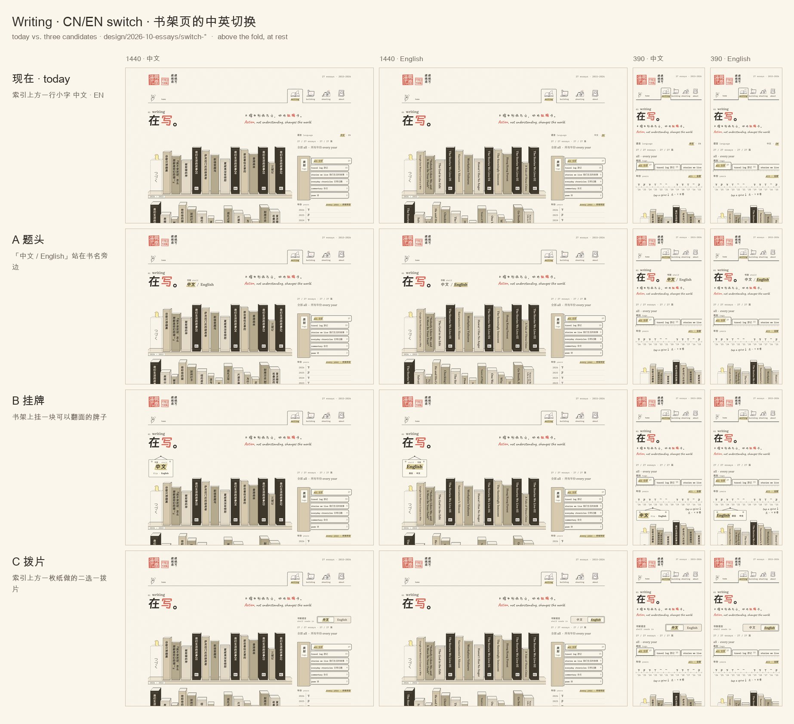
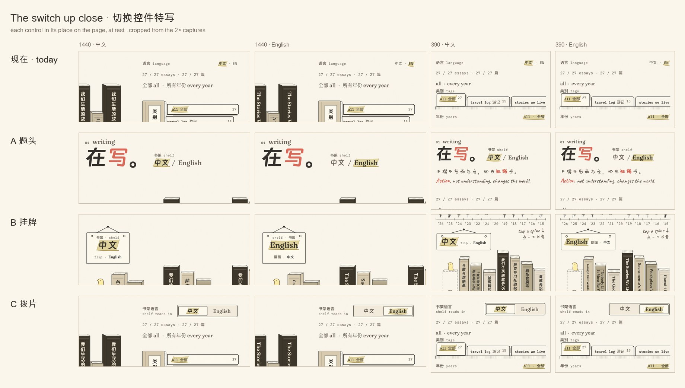

书架页的中英切换Writing's CN/EN switch — three candidates, playable on the real page
现在的切换在索引上方：一行 11.5 px 的等宽小字「中文 · EN」，排法和下面「年份 · every year」的表头一样，选中时也和「all 全部」「所有年份」一样上麦色，所以读起来只是又一个筛选项；英文那一边只写了「EN」。
Today's 中文 · EN heads the index in 11.5 px mono, set like the year ledger's head and banded like every other choice there, so it reads as one more filter, and English is only "EN".
每个方案都是真实的书架页（加载线上的同一批文件），切换走 lib/writing/lang.js 自己的状态：书脊、手里的书、fy-lang、?lang= 都和现在一样。全屏打开后，把窗口拉到 760 px 以下就是手机布局；左下角的小条可以在方案之间来回切换，语言会记住。Each candidate is the real Writing page with one switch swapped in; open it full size and narrow the window under 760 px for the phone layout. The bar at the bottom left moves between candidates.
A 题头 by the title · type
把书架的语言写进页面标题：「在写。」旁边并排「中文 / English」，用书脊上同样的字体（钉钉进步体、Fraunces 500），选中的那个由笔上麦色，上面一行小字「书架 shelf」说明它管的是书架。进页面最先读到的地方就说清楚书架现在是什么语言、另一种是什么，而且不添任何新物件。
The pair stands on the title's baseline, right of 在写。, set in the faces the spines use: the first thing you read says which language the shelf is in and offers the other, with no new object on the page.
B 挂牌 on the bookcase · object
书架头上钉一颗钉子，挂一块双面牌，像小店门口的「营业中 / OPEN」：露在外面的那一面就是书架现在的语言，牌脚用另一种语言自己的文字写着怎么翻过去（flip · English / 翻面 · 中文）。点一下，牌子在绳上翻面、在钉子上晃一下，翻到侧面的那一刻书脊跟着换，落定后笔再给新的一面上色——是这页书架上一件会动的东西，而不是又一个开关。
A two-sided sign on a nail at the head of the shelf, as a shop hangs OPEN: the face you see is the shelf's language. Tap it and it turns over on its string and swings on its nail (physics clock); the spines turn as it passes edge-on, and the pen bands the new face once it lands (hand's clock). On a phone it hangs over the swipe shelf, a wide, short card.
C 拨片 by the index · control
位置不变，还在索引上方，但做成一枚一眼能认出的拨片：凹下去的纸槽分成两半，写全「中文」和「English」，一块纸片垫在选中的那一半下面，按索引标签同样的弹簧滑过去，笔再给字上色；左边的标签说明它改的是什么：书架语言 · shelf reads in。改动最小、最像一个控件。
Today's place, made a control you can't miss: a recessed paper slot with two equal halves, the paper slide springing under the chosen one on the index tabs' spring while the pen bands the word.
现在 · today for comparison
推荐 · B 挂牌
三个里只有 B 把语言放在书架本身上、字最大，放在看完标题后眼睛自然落到的书架头（小鸟就站在它下面）；而且它用的是这个网站已有的语言：纸做的东西、因为你碰了它才动、两个时钟各管一半。代价是多一件物件、书架下移一行，另一种语言只印在牌脚的小字里。如果你更想什么都不加，A 最干净：同样一眼能看到，还顺便预告书脊的字体。C 是稳妥的退路。
B is the only one that puts the language on the shelf itself, at the largest size, where the eye lands after the title, and it does so in the site's own terms: a paper thing that moves because you touched it, on both clocks. It costs an object and a row of space, and the other language is small print on its foot. A is the cleanest if you'd rather add nothing; C is the safe fallback.
记录 · design record
execution mode: multi-stage (candidates, Fred's pick, then refine and port) · source: Fred's note and today's switch (lib/writing/lang.js) · all three keep lang.js's behaviour, the pen (Tier.wire states), the tokens, and no coral at rest
| A 题头 | B 挂牌 | C 拨片 | |
|---|---|---|---|
| source-form distance | low: a literal pair of words | low: a recognisable shop sign, card, string and nail | low: a recognisable two-way slide switch |
| primary carrier | line-led: type, and the pen's band | line-led: one ink edge for card, string and holes | line-led: ink edges for slot and slide |
| resolution | low: one pair, one caption | low–moderate: card, two faces, string, nail | low: a slot and a slide |
| expression anchor | the pair set in the spines' own faces on the title's baseline | the turn on its string and the swing on its nail; the band arrives after the card lands | the slide springing under the chosen half, as the index tabs spring |
| colour plan | ink and soft type; wheat band = chosen; coral only for hover and focus | page paper, ink; wheat band = the face showing; coral only for hover and focus | paper2 slot, page slide, ink; wheat band = chosen; coral only for hover and focus |
| phone | beside the title, same pair at 20 px | over the swipe shelf's head, a wide, short card; the cue moves right | the first row of the index strip, as today |
| a port changes | a mount host in the masthead; the index row goes | a sign module and its CSS; one button, not two; the index row goes | lang.js's Switch rebuilt as the slot; same place |
对照 · today vs. candidates
frozen captures from this round (2026-10-05), at rest, above the fold · the live frames above follow the site as it changes
1440 and 390, each language

each control up close, in its place

问题 · for Fred
- 选哪一个——A、B、C，还是组合（比如 B 的牌子挂在 A 的位置）？ Which one, or which parts combined?
- 如果选 B：牌子上只露当前语言、另一种只在牌脚小字里，够明显吗？还是两种都要印在正面？ If B: is the other language as small print on the sign's foot enough?
- 桌面上往下翻书架时，切换要不要一直留在视野里？现在的会滚出去，三个方案也都不是固定的。 Should the switch stay in view as you scroll down the shelf?